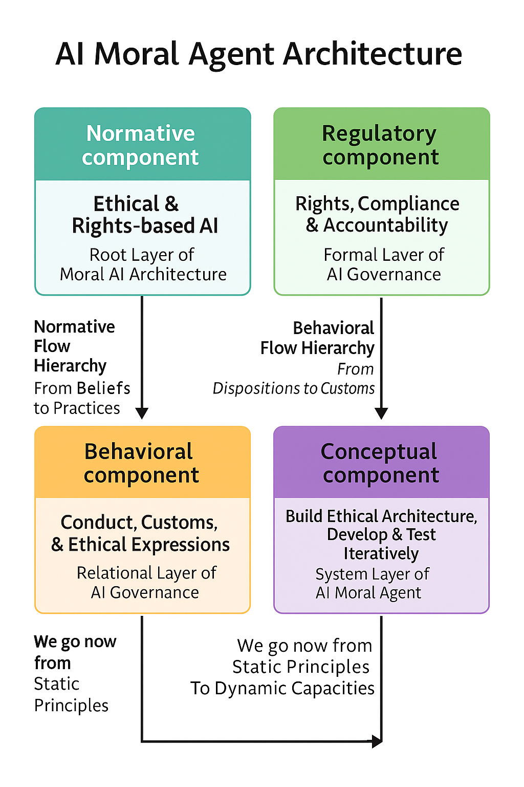

Advancing Ethical AI
A Methodological and Empirical Approach to the AI Moral Code
Author: Randy J. Hinrichs, Professor of Practice, Norwich University
Contact: rhinrich@norwich.edu
Abstract
This paper presents a methodological and empirical framework for the AI Moral Code, based on the Normative, Regulatory, Behavioral, and Conceptual (NRBC) architecture. Analyzing 291 AI ethics documents (2006–2025), it identifies high-frequency values and forecasts emerging trends. The framework translates ethical priorities into system design and governance, offering evidence-based insights and supporting value alignment across sectors such as healthcare, education, justice, and autonomous vehicle technologies.
Download White Paper
Recent Blog Posts
- My First Moral Decision Regarding Testing – May 11, 2025
- The AiBQ: AI Behavior Quotient – May 11, 2025
- ICAD 2025 Conference: Ethics in AI System Architecture – May 08, 2025
- View All Posts
Access QR Code

NRBC Architecture Diagram
This diagram illustrates the NRBC Architecture for ethical AI agents. It establishes a visual taxonomy linking moral principles, compliance layers, social behaviors, and system-level development practices. Published here as a timestamped IP declaration.